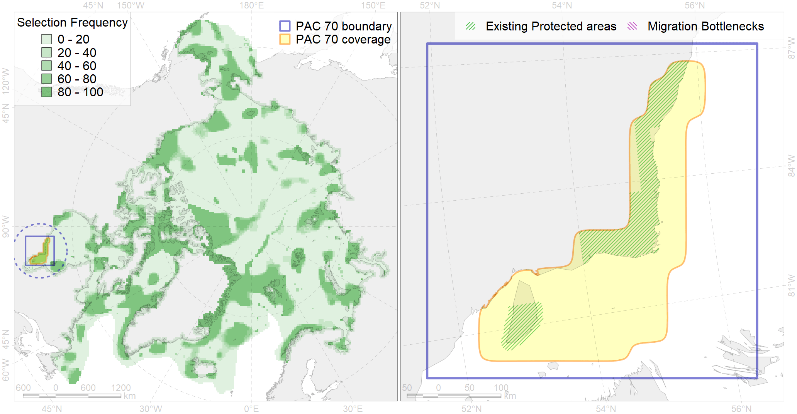

Region 70
Region 70
“ArcNet” scenario 33 achievement for region 70.
Use Accenter for advanced mode.

0
CFs inside of Region completely
7
CFs inside of Region at quarter
4
Complete-targets achievement by Region
9
Half-targets achievement by Region
| CF | Name | Target Achievement for Region | Proportion of Target Achievement in Region | Amount Proportion in Region |
|---|---|---|---|---|
| 5025 | Beluga of the James Bay summer core distribution | 93.9% | 90.1% | 68.2% |
| 9035 | polar bear denning areas of SH (Southern Hudson Bay) subpopulation | 100.4% | 85.7% | 67.1% |
| 5026 | Beluga of the James Bay winter distribution | 98.2% | 86.4% | 51.7% |
| 5024 | Beluga of the James Bay summer distribution | 92.0% | 89.8% | 50.0% |
| 6064 | Common eider (Somateria mollissima sedentari) Hudson Bay breeding&moulting grounds | 49.1% | 48.5% | 30.0% |
| 3129 | polynya Hudson E | 173.4% | 76.7% | 28.3% |
| 7030 | James Bay enclave | 119.0% | 40.5% | 25.2% |
| 9017 | polar bear of the SH (Southern Hudson Bay) subpopulation distribution | 69.3% | 58.9% | 23.8% |
| 7168 | IV.2.1. shallow James Bay | 331.3% | 39.3% | 22.6% |
| 8024 | intertidal zone of the Hudson Bay LME | 36.6% | 31.7% | 16.6% |
| 5031 | Beluga of the Western Hudson Bay summer distribution | 27.2% | 26.5% | 15.1% |
| 8037 | Salt marshes of the Hudson Bay LME | 41.7% | 29.6% | 14.3% |
| 4007 | Feeding/nursery area of the Cisco (Coregonus artedi) (F 13) | 29.3% | 20.6% | 10.6% |
| 4031 | Feeding area of the Brook Trout (Salvelinus fontinalis) (F 29) | 51.9% | 21.5% | 8.6% |
| 2010 | Bearded seal whelping areas in the Hudson Bay | 18.3% | 18.3% | 4.9% |
| 4011 | Feeding area of the Lake whitefish (Coregonus clupeaformis) (F 16) | 10.9% | 10.3% | 4.9% |
| 4075 | Fish zoogeography, Arctic Region, High-Arctic Shelf Province, Hudson District | 44.0% | 15.8% | 4.4% |
| 2048 | Ringed seal whelping areas in the Hudson Bay area | 16.4% | 15.3% | 4.4% |
| 3035 | Marginal Ice Zone distribution in July in the Hudson Bay LME | 15.1% | 10.6% | 4.0% |
| 2019 | Harbour seal range in the North Atlantic region | 42.6% | 6.5% | 2.9% |
| 4035 | Feeding area of the Lake trout (Salvelinus namaycush) (F32) | 13.5% | 5.4% | 2.7% |
| 3022 | Marginal Ice Zone distribution in April in the Hudson Bay LME | 16.1% | 3.8% | 2.3% |
| 7028 | Hudson Bay enclave | 18.8% | 11.8% | 1.9% |
| 8020 | Hudson Bay estuaries | 2.7% | 2.4% | 1.9% |
| 4048 | Feeding/nursery area of the ogac (Gadus ogac ) (F 41) | 14.0% | 3.5% | 1.8% |
| 1011 | Atlantic Walrus haulouts in Nunavut and West Greenland | 1.6% | 1.6% | 1.6% |
| 4053 | Range of the Fourhorn Sculpin (Myoxocephalus quadricornis) (F 45), Euro-Asian populations | 31.3% | 1.9% | 1.1% |
| 6083 | Thick-billed murre (Uria lomvia lomvia) wintering grounds | 4.1% | 2.9% | 1.1% |
| 4003 | Range of the Atlantic Capelin (Mallotus villosus) (F10) | 32.2% | 2.7% | 1.1% |
| 1002 | Atlantic Walrus Summer Distribution in Canada | 2.7% | 1.8% | 0.9% |
| 4029 | Feeding area of the Arctic charr (Salvelinus alpinus), anadromous populations (F28) | 2.2% | 1.9% | 0.9% |
| 5112 | Arctic Cetaceans (beluga, bowhead, narwhal) winter habitats as predicterd by MIZ | 1.5% | 1.3% | 0.7% |
| 4041 | Range of the Polar Cod (Boreogadus saida) (F35) | 2.7% | 1.0% | 0.4% |
| 6015 | Black guillemot (Cepphus grylle mandti) breeding grounds | 2.4% | 0.5% | 0.3% |
| 4017 | Feeding/ migration area of the Greenland Shark (Somniosus microcephalus) (F1) | 0.1% | 0.0% | 0.0% |